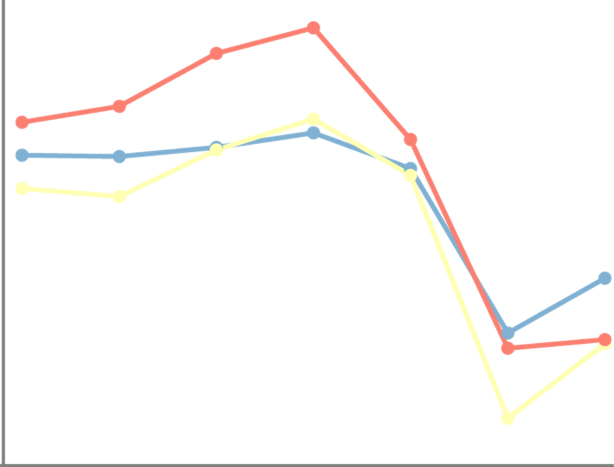

Historique
Nous pourrions attribuer le nuage de points à Francis Galton (1863). Il représente des observations (la taille d’un enfant et de ses parents) sous forme de points sur un repère cartésien, il a constaté une corrélation : plus ses parents sont grands, plus il y a de chance que leur progéniture le soit. Graphiquement, il cherche à faire passer une droite qui passe au plus près de points du nuage. S’il propose alors le modèle de régression linéaire, la représentation par nuage de point est plus ancienne.
Le premier nuage de points pourrait être proposé par l’astronome germano-britannique, William Herschel, le découvreur de l’astre de Georges III, plus connu sous le nom d’Uranus. Dans son article de 1833, il construit un nuage du point pour prévoir l’orbite d’une étoile double dans la constellation de la Vierge. Il fait figurer la position apparente de l’étoile dans le ciel et l’année d’observation. Il propose de tracer une courbe qui peut permettre de définir la prochaine position de l’étoile.
D’après Tufte (1983), plus des trois quarts des publications scientifiques utilisent les nuages de points.
- Timeline de l’histoire de la dataviz
Pourquoi des nuages de points
Pourquoi les utiliser?
- Les nuages de points conviennent pour examiner la relation entre deux (ou plus) variables.
- Évaluer l’ajustement d’un modèle de régression.
- Prédire la valeur d’une variable inconnue.
- Voir les valeurs aberrantes et les observations inhabituelles.
- Ils peuvent aussi être utilisés pour représenter une série temporelle quand les mesures ont été prises à des temps irréguliers.
- Ils sont faciles à créer et à comprendre. Ce sont des diagrammes très utilisés.
Pourquoi ne pas les utiliser?
- Lorsqu’il n’y a aucune corrélation, utiliser un nuage de point peut être trompeur : il n’y a aucune relation entre les variables choisies. Dans ce cas, un diagramme en barre est plutôt souhaitable.
- Ne pas confondre corrélation et causalité. Les phénomènes peuvent être liés, mais cela ne veut pas dire qu’il est causé seulement par une variable. D’autres facteurs peuvent jouer. Il ne faut pas tirer de règle générale.
- Les variations de l'échelle utilisée sur les axes peuvent altérer la perception de la corrélation.
Le nuage de points et ses variantes
Deux variables
Le nuage de points

Plus de deux variables
Comment faire lorsqu’on a plus de deux variables à représenter dans le jeu de données ?
Un nuage de points en 3D ?
Passer à la 3D ? Toutefois, il est préférable de rester en deux dimensions :
- C’est souhaitable avec une visualisation interactive. Mais les informations que vous jugez pertinentes doivent être présentées à l’utilisateur, sinon ce dernier risque de passer à côté du message que vous voulez lui faire passer
- Il faut choisir des angles de vue permet d’illustrer son propos de manière plus pertinente.
- Malgré tous vos efforts, le graphe n’est pas toujours lisible compte tenu de la superposition des points et de la perspective.
- Enfin, la mise en œuvre peut être complexe
Utiliser les variables graphiques
Associez les variables supplémentaires en jouant avec les variables graphiques proposées par Bertin : la couleur, les symboles, la taille.
Multiples petits
Testez par vous-même
Recommandations
Les données
- Nous disposons d’observations sur deux variables X et Y
- Si nous prévoyons une valeur ou nous expliquons une variable Y à partir d’une variable X, il faut mettre X en abscisse et Y en ordonnée.
Recommandation 1
- Rajouter une courbe de régression pour mettre en évidence les liens entre les variables
- Rajouter une ellipse permet d’illustrer la moyenne, l’écart type et la corrélation
Recommandation 2
- Quand la densité des points est trop grande, il est possible de jouer sur la transparence ou modifier le symbole en fonction de la densité.
- Rajouter un petit décalage aléatoire permet d’éviter une superposition
La version html est mieux http://datasens.fr/demo/scatterplot/scatter_plot_formation.html mis en dessous
Testez par vous-même
Recommandation 3
- Préférer les multiples petits pour améliorer la lisibilité
- Lorsque le nombre de points représentés est trop élevé
- Quand il y a trop de variables en jeu.
Outils
Sélection d’outils
Nous vous proposons des diagrammes, des variantes et des lignes directrices, mais peut-on les mettre en œuvre concrètement avec les outils graphiques ?
La liste des logiciels de visualisation de données est longue et en faire une analyse exhaustive serait fastidieuse et peu pratique à utiliser. Nous avons choisi quelques outils connus, facile d’accès pour des débutants et qui permettent d’exporter les graphiques dans un format vectoriel .svg (sauf pour l’outil Tableau Software).
Dans ce format, les diagrammes se composent d’un ensemble d’objets graphique (polygones, lignes, cercles et textes) qu’il est possible d’importer dans des outils de présentation tels que PowerPoint, Draw ou des outils vectoriels dédiés comme Illustrator ou son équivalent libre Inkscape. Il est alors possible de faire manuellement des modifications qui ne sont pas ou difficilement réalisables avec l’outil de dataviz.
Exemples
- Les exemples qui sont proposés présentent des réalisations basiques. Pensez à sélectionner l’onglet correspondant au nuage de point.
Exemple Excel
En savoir +
- Tous les types de diagrammes à secteurs sont réalisables (n’hésitez pas à regarder des tutoriels pour les construire si besoin).
- Pour transférer un graphique au format .svg, sélectionnez le graphique dans l’onglet puis faire un copier-coller vers l’outil de dessins vectoriels ou de présentation.
GOOGLE SHEET (on line)
En savoir +
- Tous les types de diagrammes à secteurs sont réalisables (n’hésitez pas à regarder des tutoriels pour les construire si besoin).
- Pour transférer un graphique au format .svg, sélectionnez le graphique dans l’onglet puis en haut à droite du graphique, cliquez sur l’icone puis télécharger au format .svg.
TABLEAU SOFTWARE
Le site Tableau public propose de nombreux exemples de réalisation de diagrammes à lignes téléchargeables
En savoir +
- L’outil Tableau ne propose pas d’exportation au format .svg mais au format .pdf. Dans ce format, avec les outils vectoriels, l’extraction des formes du graphique reste possible mais pas très pratique.
CALC OpenOffice
En savoir +
- Tous les types de diagrammes à secteurs sont réalisables (n’hésitez pas à regarder des tutoriels pour les construire si besoin).
- Pour transférer un graphique au format .svg, sélectionnez le graphique dans l’onglet puis faire un copier-coller vers l’outil de dessins vectoriels ou de présentation.
RAWgraph (on line)
En savoir +
- Cet outil en ligne simple ne permet pas de réaliser tous les types de diagrammes à secteurs.
- Sa simplicité d’utilisation et sa fonction d’exportation au format .svg le place comme une possible alternative à des outils plus complexes comme les tableurs.
Les langages de programmation
Sachez enfin, qu’avec les librairies graphiques associées aux langages de programmation R, Python ou JavaScript, il est possible de réaliser tous les diagrammes et les recommandations.
Liens vers le code de graphiques basiques :
JavaScript Observablehq (1)
R (R Graph Gallery)(2),
Python (Python Graph Gallery)(2),
JavaScript d3.js (d3.js Graph Gallery)(2) .
(1) Notebooks observablehq de l’association TDV
(2) Site de Yan Holtz (en anglais) et
Le site The Data Visualization Catalogue propose aussi des exemples réalisés avec de multiples outils ou langages de programmation (en anglais).